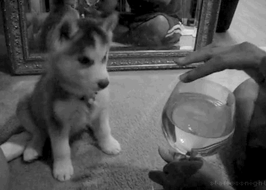
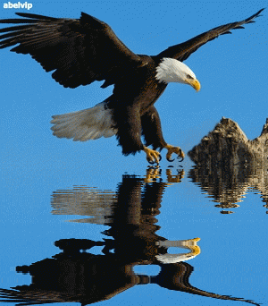
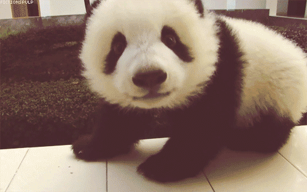
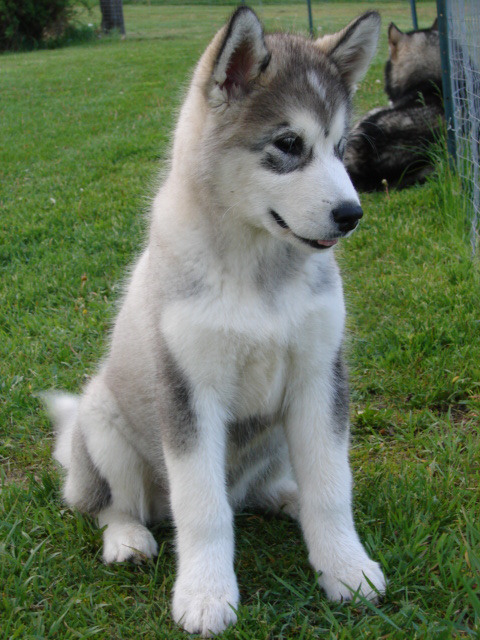
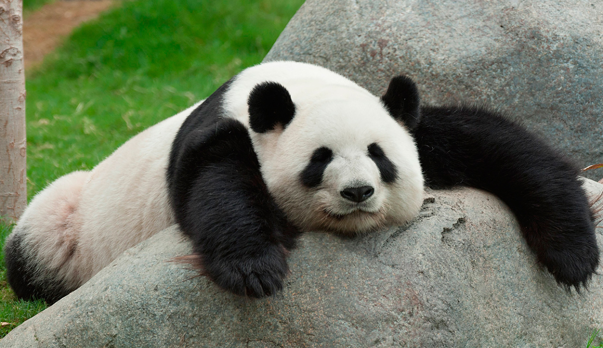
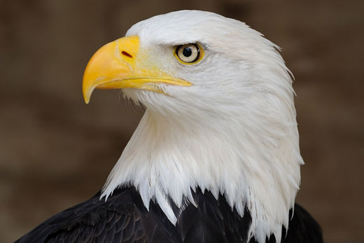

ANIMALANDEA
|  |
 |
 |
 |
Raúl Hernández Martínez
Alaska
- Altura a la cruz: unos 63 cm
- Peso: unos 35 kg
- Capa: parda o variante del gris claro al negro, con blanco en el vientre
- Promedio de vida: doce años
- Carácter: afectuoso e independiente
- Relación con los niños: excelente
- Relación con otros perros: difícil con los sujetos de su mismo sexo
- Aptitudes: perro de trineo
- Necesidades del espacio: puede vivir en el interior de la vivienda con salidas largas y frecuentes. Prefiere el jardín
- Alimentación del Alaskan Malamute: unos 600 g. de alimento completo seco
- Arreglo: reducido, cepillado periódico
- Costo mantenimiento: elevado

Raúl Hernández Martínez
KOALA
- Es un animal que pertenece a la familia de los marsupiales, un tipo de mamíferos que vive principalmente en Australia.
- ¿Cómo es el koala?
Los koalas viven concretamente en el este de Australia, donde hay más eucaliptos, un tipo de árbol muy típico de ese país. De hecho, los koalas se alimentan principalmente de las hojas de eucalipto.
- ¿Sabíais que los koalas duermen hasta 22 horas al día? ¡Les encanta dormir! Como también les encantan los árboles, suelen dormir apoyados en los propios árboles. ¿Recuerdas cuál era el árbol preferido de los koalas...?
- Dormir es muy importante para poder levantarte con energía y jugar con tus amigos, aprender cosas nuevas en el cole, pintar, correr, divertirte aprendiendo... Por ello, es importante que cada día duermas unas 11 horas.

Raúl Hernández Martínez
Página cuatro
- El oso panda tiene las extremidades, orejas, parte de la espalda y arillos alrededor de los ojos en color negro, mientras que el resto de su cuerpo es blanco. Los científicos aún no conocen con exactitud la razón de este curioso patrón de coloración, pero sugieren que le es útil para camuflarse entre la nieve y las rocas de su hábitat natural. Asimismo, el denso pelaje le permite mantenerse caliente.
- Aunque parezca de mayor tamaño, el panda mide alrededor de 1.2-1.9 metros de longitud y pesa en promedio entre 100 y 115 kilos. Sus patas delanteras son más fuertes y musculosas que las traseras, pues le sirven para escalar. Presenta una característica conocida como el sexto dedo que utilizan a manera de pulgar, aunque es en realidad una modificación en el hueso de su muñeca.
Es muy buen nadador y puede permanecer en tierra firme o trepado en árboles.
- COMPORTAMIENTO DEL OSO PANDA
El oso panda es un animal solitario. Tiene mayor actividad durante las puestas de sol y suele delimitar su territorio con orina, olores y marcas de garras; así evitan enfrentamientos entre ellos.
A diferencia de otros osos, el panda gigante no hiberna pero sí desciende a elevaciones más bajas durante el frío invierno en busca de temperaturas más altas. En esa época busca cuevas, árboles huecos y grietas donde puede mantenerse caliente.
ALIMENTACIÓN DEL OSO PANDA
El panda es casi exclusivamente herbívoro, pues el 99 % de su dieta está conformada por bambú, y puede pasar de 10 a 12 horas del día alimentándose. Se diferencia de otros osos al tener la habilidad de poder alimentarse sentado. Con su llamado sexto dedo, rompe fácilmente el bambú.

Raúl Hernández Martínez
Página cuatro
- Las características principales de esta gran ave radican sobre todo en el cuerpo estilizado y aerodinámico que tienen. Las águilas, a diferencia de muchas otras aves, tienen un cuerpo quizás algo más delgado con unas amplias alas y una cabeza pequeña pero con grandes ojos. Se dice que un águila puede ver, mientras está volando, a su objetivo que se encuentra a varios kilómetros de distancia, siguiéndolo sigilosamente desde las alturas para darle caza. El plumaje por lo general es de un color marrón parduzco, como en el caso del águila real, sin embargo puede variar mucho según el tipo de águila que vayas a observar, pudiendo ser algunas de un color grisáceo como el águila harpía.

Raúl Hernández Martínez